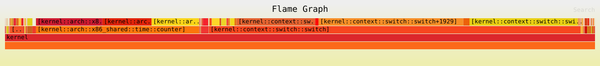

效能
基準測試
This section contain commands for system benchmark.
- CPU performance
dd bs=1M count=1024 if=/scheme/zero | sha256sum
- RAM performance
dd bs=1M count=1024 if=/scheme/zero of=/scheme/null
- Filesystem read performance
(Add the neverball recipe on your filesystem image, by using the make rp.neverball or sudo pkg install neverball commands, or permanently adding using neverball = {} on your filesystem configuration)
dd bs=1M count=256 if=/usr/games/neverball/neverball of=/scheme/null conv=fdatasync
- Filesystem write performance
(Add the neverball recipe on your filesystem image, you can also install it with the sudo pkg install neverball command)
dd bs=1M count=256 if=/usr/games/neverball/neverball of=fs_write_speed_bench conv=fdatasync
- Userspace IPC performance
dd bs=4k count=100000 < /scheme/zero > /scheme/null
Profiling
This section explain how to configure and do system performance profiling.
Kernel
You can create a flamegraph showing the kernel's most frequent operations, using time-based sampling.
This is an example flamegraph. If you open the image in a new tab, there is useful mouse hover behavior.

The steps below are for profiling on x86_64, running in QEMU. It is possible to run the tests on real hardware, although retrieving the data require additional effort.
If you use PS/2 input devices in real hardware you need to disable the serio_command code in the src/profiling.rs file.
Setup
-
Open a terminal window in the
redoxdirectory. -
Install the tools:
cargo install redox-kprofiling inferno
-
Rename the
kernel = {}item atconfig/base.tomltoprofiling-kernel = {} -
Temporarily install the
profiledrecipe with themake rp.profiledcommand or permanently install by adding it in the[packages]section of your filesystem configuration and runmake rp.profiled:
[packages]
profiled = {}
-
Boot QEMU and use the
sudo kprof_record <app-command> [APP-ARGS...]command to profile the kernel when running the specified application (can't be used with multiple applications in the same command). -
(Optional) The following filesystem configuration is used for automated profiling: create the filesystem configuration (
config/my_profiler.toml, for example) or adapt your existing configuration with the following content:
include = [ "minimal.toml" ]
# General settings
[general]
# Filesystem size in MiB
filesystem_size = 256
# Package settings
[packages]
bash = {}
profiled = {} # Profiling daemon
# Add any other recipes you need for testing here
[[files]]
path = "/usr/bin/perf_tests.sh"
data = """
#!/usr/bin/env bash
dd bs=4k count=100000 < /scheme/zero > /scheme/null
"""
# Script to perform performance tests - add your tests here
# If you will be testing manually, you don't need this section
[[files]]
path = "/usr/lib/init.d/99_tests"
data = """
echo Waiting for startup to complete...
sleep 5
echo
echo Running tests...
kprof_record /usr/bin/perf_tests.sh
echo Shutting down...
shutdown
"""
- (Optional) In the
redoxdirectory, create the file.configwith the following content:
# This needs to match the name of your filesystem configuration file
CONFIG_NAME=my_profiler
# QEMU core count, add if you want to increase the default core count (4)
QEMU_SMP=5
# Don't use the QEMU GUI
gpu=no
- In the
redoxterminal window, run themake r.profiling-kernel,profiled imagecommand.
Profiling
QEMU can't be running during this step, verify if it's closed beforehand to prevent data corruption
- The
make flamegraphcommand will create a SVG of profiling data collected inside of Redox, the SVG location is:build/flamegraph/$(TARGET)-$(CONFIG_NAME)-kflamegraph.svg
Use the KPROF_OPTIONS=option-value environment variable to determine what formatting options you want for your flamegraph:
- 'i' for relaxed checking of function length
- 'o' for reporting function plus offset rather than just function
- 'x' for both grouping by function and with offset
Replace the "option-value" with your preferred formatting options.
Example:
make flamegraph KPROF_OPTIONS=xo
- View your flamegraph SVG in a web browser.
firefox build/flamegraph/$(TARGET)-$(CONFIG_NAME)-kflamegraph.svg
Real Hardware
TODO: test
Boot the system, and when you're done profiling, kill profiled and extract the /root/profiling.txt file (Details TBD)